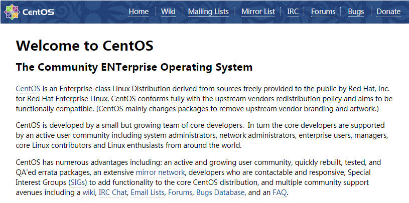
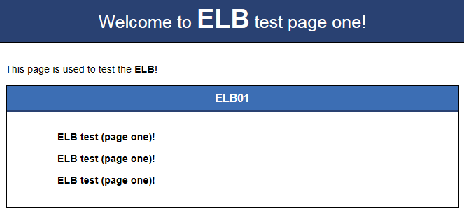
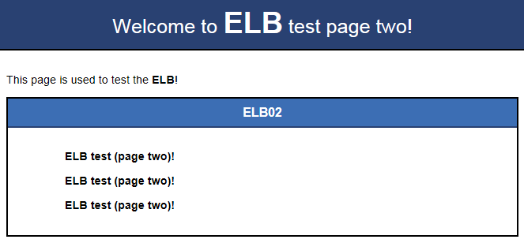
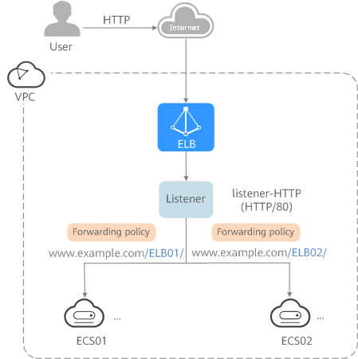
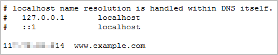
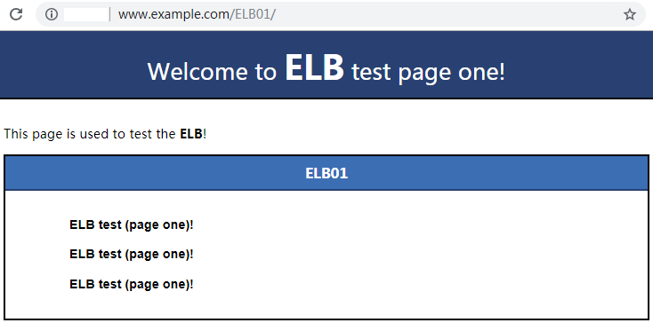
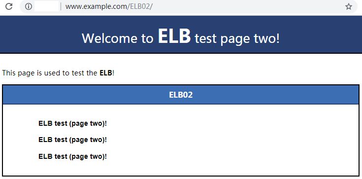

Using Shared Load Balancers — Advanced Level
Scenarios
You have two web applications deployed on two ECSs separately, and the web applications provide one domain name but different URLs for users to access.
To forward requests based on URLs, you need to create a load balancer, add an HTTP or HTTPS listener, and add forwarding policies to specify the URLs.
An HTTP listener is used as an example to describe how to route requests from two URLs (/ELB01 and /ELB02) of the same domain name (www.example.com) to different backend servers.
Prerequisites
- You have added security group rules to allow traffic from the ports used by the two ECSs. (Alternatively, you can enable all ports first and then disable the ports that are no longer used.)
- The security group containing the two ECSs allows traffic from 100.125.0.0/16. (ELB uses these IP addresses to perform health checks and route requests to backend servers.)
Creating ECSs
ECSs are used as backend servers.
Each ECS needs an EIP to allow you to deploy the backend service on each ECS. In actual use, you can unbind the EIP from each ECS if the ECSs do not need to access the Internet or provide Internet-accessible services after the deployment is complete. Determine whether you need an EIP for your load balancer by referring to Load Balancing on a Public or Private Network.
- Log in to the management console.
- In the upper left corner of the page, click
 and select the desired region and project.
and select the desired region and project. - Hover on
 in the upper left corner to display Service List and choose Computing > Elastic Cloud Server.
in the upper left corner to display Service List and choose Computing > Elastic Cloud Server. Click Create ECS, configure the parameters, and click Create Now.
The following table lists the specifications of the two ECSs.
Table 1 ECS specificationsItem
|
Example Value
|
|---|
Name
|
ECS01 and ECS02
|
OS
|
CentOS 7.2 64bit
|
vCPUs
|
2
|
Memory
|
4 GB
|
System disk
|
40 GB
|
Data disk
|
100 GB
|
Bandwidth
|
5 Mbit/s
|
- Submit your request.
Deploying the Application
Deploy Nginx on the two ECSs and edit two HTML pages for the web applications so that a page with message "Welcome to ELB test page one!" is returned when ECS01 is accessed, and the other page with message "Welcome to ELB test page two!" is returned when ECS02 is accessed.
- Log in to the ECSs.
- Install and start Nginx.
- Install Nginx:
yum -y install nginx
- Start Nginx:
systemctl start nginx.service
- Enter http://EIP bound to the ECS in the address box of your browser.If the following page is displayed, Nginx has been installed.Figure 1 Nginx installed successfully

- Modify the HTML page of ECS01.Move the index.html file from the default root directory of Nginx /usr/share/nginx/html to the ELB01 directory and modify the file to identify access to ECS01.
- Create the ELB01 directory and copy the index.html file to this directory:
mkdir /usr/share/nginx/html/ELB01
cp /usr/share/nginx/html/index.html /usr/share/nginx/html/ELB01/
- Open the index.html file.
vim /usr/share/nginx/html/ELB01/index.html
- Press i to enter editing mode.
- Modify the index.html file to be as follows:
...
<body>
<h1>Welcome to <strong>ELB</strong> test page one!</h1>
<div class="content">
<p>This page is used to test the <strong>ELB</strong>!</p>
<div class="alert">
<h2>ELB01</h2>
<div class="content">
<p><strong>ELB test (page one)!</strong></p>
<p><strong>ELB test (page one)!</strong></p>
<p><strong>ELB test (page one)!</strong></p>
</div>
</div>
</div>
</body>
- Press Esc to exit editing mode. Then, enter :wq to save the settings and exit the file.
- Modify the HTML page of ECS02.Move the index.html file from the default root directory of Nginx /usr/share/nginx/html to the ELB02 directory and modify the file to identify access to ECS02.
- Create the ELB02 directory and copy the index.html file to this directory:
mkdir /usr/share/nginx/html/ELB02
cp /usr/share/nginx/html/index.html /usr/share/nginx/html/ELB02/
- Open the index.html file.
vim /usr/share/nginx/html/ELB02/index.html
- Press i to enter editing mode.
- Modify the index.html file to be as follows:
...
<body>
<h1>Welcome to <strong>ELB</strong> test page two!</h1>
<div class="content">
<p>This page is used to test the <strong>ELB</strong>!</p>
<div class="alert">
<h2>ELB02</h2>
<div class="content">
<p><strong>ELB test (page two)!</strong></p>
<p><strong>ELB test (page two)!</strong></p>
<p><strong>ELB test (page two)!</strong></p>
</div>
</div>
</div>
</body>
- Press Esc to exit editing mode. Then, enter :wq to save the settings and exit the file.
- Use your browser to access http://ECS01 EIP/ELB01/ and http://ECS02 EIP/ELB02/ to verify that Nginx has been deployed.
If the modified HTML pages are displayed, Nginx has been deployed.
- HTML page of ECS01Figure 2 Nginx successfully deployed on ECS01

- HTML page of ECS02Figure 3 Nginx successfully deployed on ECS02

Creating a Load Balancer
- In the upper left corner of the page, click
 and select the desired region and project.
and select the desired region and project. - Hover on
 in the upper left corner to display Service List and choose Network > Elastic Load Balancing.
in the upper left corner to display Service List and choose Network > Elastic Load Balancing. - Click Create Elastic Load Balancer and then configure the parameters.
- Click Create Now.
- Confirm the configuration and submit your request.
- View the newly created load balancer in the load balancer list.
Adding a Listener
Add a listener to the created load balancer. When you add the listener, create a backend server group, configure a health check, and add the two ECSs to the created backend server group.
Configure two forwarding policies to forward HTTP requests to the two ECSs, for example, requests from www.example.com/ELB01/ to ECS01, and those from www.example.com/ELB02/ to ECS02.Figure 4 Traffic forwarding

- Hover on in the upper left corner to display Service List and choose Network > Elastic Load Balancing.
- Locate the created load balancer and click its name.
- Under Listeners, click Add Listener.
- Configure the listener and click Next.
- Name: Enter a name, for example, listener-HTTP.
- Frontend Protocol/Port: Select a protocol and enter a port for the load balancer to receive requests. For example, set it to HTTP and 80.
- Create a backend server group, configure a health check, and click Finish.
- Backend server group
- Name: Enter a name, for example, server_group-ELB.
- Load Balancing Algorithm: Select an algorithm that the load balancer will use to route requests, for example, Weighted round robin.
- Health check
- Protocol: Select a protocol for the load balancer to perform health checks on backend servers. If the load balancer uses TCP, HTTP, or HTTPS to receive requests, the health check protocol can be TCP or HTTP. Here we use HTTP as an example. Note that the protocol cannot be changed after the listener is added.
- Domain Name: Enter a domain name that will be used for health checks, for example, www.example.com.
- Port: Enter a port for the load balancer to perform health checks on backend servers, for example, 80.
Adding Forwarding Policies
- Click the name of the newly added listener and then click Add next to Forwarding Policies.
- Configure the forwarding policy and click Next.
- Name: Enter a name for the forwarding policy, for example, forwarding_policy-ELB01.
- Domain Name: Enter a domain name that will be used to forward the requests, for example, www.example.com. The domain name in the request must exactly match that specified in the forwarding policy.
- URL: You can also specify a URL to forward the requests, for example, /ELB01/.
- URL Matching Rule: Select the rule for matching specified URL string with the requested URL. Three options are available, Exact match, Prefix match, and Regular expression match. Exact match enjoys the highest priority, and Regular expression match the lowest priority. Select Exact match here.
- Add the backend server group and configure a health check.
- Backend server group
- Name: Enter a name, for example, server_group-ELB01.
- Load Balancing Algorithm: Select an algorithm that the load balancer will use to route requests, for example, Weighted round robin.
- Health check
- Protocol: Select a protocol for the load balancer to perform health checks on backend servers. If the load balancer uses TCP, HTTP, or HTTPS to receive requests, the health check protocol can be TCP or HTTP. Here we use HTTP as an example. Note that the protocol cannot be changed after the listener is added.
- Domain Name: Enter a domain name that will be used for health checks, for example, www.example.com.
- Port: Enter a port for the load balancer to perform health checks on backend servers, for example, 80.
- Select the newly added forwarding policy. On the Backend Server Groups tab page on the right, click Add.
- Select the server you want to add, set the backend port, and click Finish.
- Backend server: ECS01
- Backend port: Set it to 80. Backend servers will use this port to communicate with the load balancer.
- Repeat 1 to 5 to add another forwarding policy, create a backend server group, and add ECS02 to the backend server group. Configure the parameters.
Verifying Load Balancing
After the load balancer is configured, you can access the domain name or the specified URL to check whether the two ECSs are accessible.
- Modify the C:\Windows\System32\drivers\etc\hosts file on your PC to map the domain name to the load balancer EIP.View the load balancer EIP on the basic information page of the load balancer.Figure 5 hosts file on your PC

- On the CLI of your PC, run the following command to check whether the domain name is mapped to the load balancer EIP:
ping www.example.com
If data packets are returned, the domain name has been mapped to the load balancer EIP.
- Use your browser to access http://www.example.com/ELB01/. If the following page is displayed, the load balancer has routed the request to ECS01.Figure 6 Accessing ECS01


ELB01/ indicates that the default directory named ECS01 is accessed, while ELB01 indicates the file name. Therefore, the slash (/) following ELB01 must be retained.
- Use your browser to access http://www.example.com/ELB02/. If the following page is displayed, the load balancer has routed the request to ECS02.Figure 7 Accessing ECS02

Parent topic: Getting Started